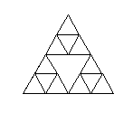
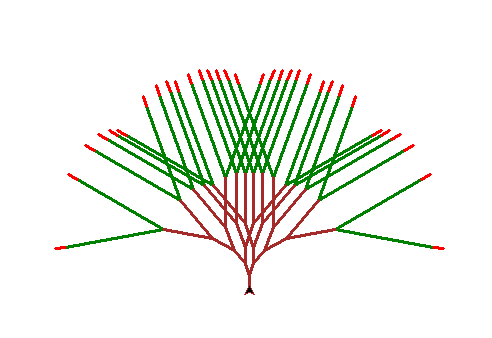
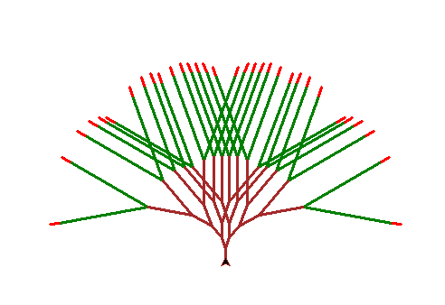

def koch_snowflake(t, depth, size):
if (depth == 1):
t.fd(size)
else:
t.width(random.randrange(2, 5))
koch_snowflake(t, depth-1, size)
t.lt(60)
koch_snowflake(t, depth-1, size)
t.rt(120)
koch_snowflake(t, depth-1, size)
t.lt(60)
koch_snowflake(t, depth - 1, size)
t.rt(120)


def hextriangle(t, size):
t.rt(60)
t.fd(size)
t.rt(60)
t.fd(size)
t.rt(60)
t.fd(size)
t.rt(60)
def hexagon_sierpinski(t, depth, size):
if depth == 1:
hextriangle(t, size)
else:
t.pencolor((random.randrange(1, 255), random.randrange(1, 255), random.randrange(1, 255)))
t.width(1)
hexagon_sierpinski(t, depth-1, size/2)
t.fd(size/2)
hexagon_sierpinski(t, depth-1, size/2)
t.bk(size/2)
t.lt(60)
t.fd(size/2)
t.rt(60)
hexagon_sierpinski(t, depth-1, size/2)
t.rt(120)
t.fd(size/2)
t.lt(120)
 

def sharp_bush(t, depth, size, angle):
if depth == 0:
t.pencolor("green")
t.fd(size)
t.pencolor("red")
t.fd(size/10)
t.pu()
t.bk(size + (size/10))
t.pencolor("brown")
t.pd()
else:
t.width(3)
t.fd(size/(2 * depth ))
t.rt(angle)
sharp_bush(t, depth-1, size, angle)
t.lt(2 * angle)
sharp_bush(t, depth-1, size, angle)
t.rt(angle)
t.bk(size/(2 * depth))